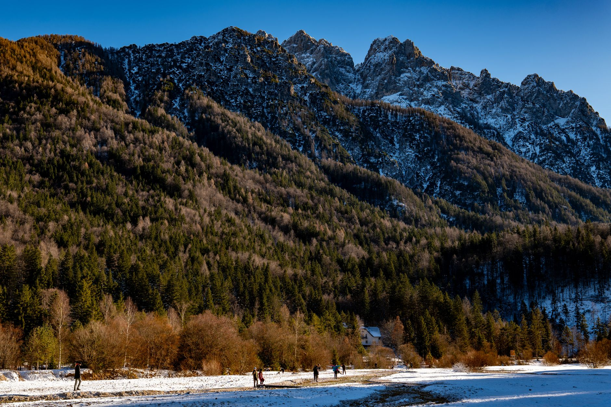
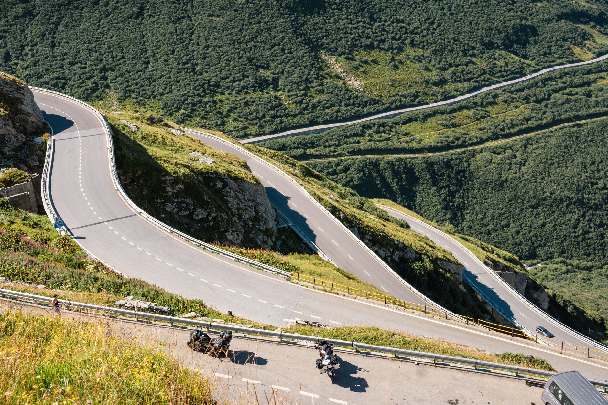
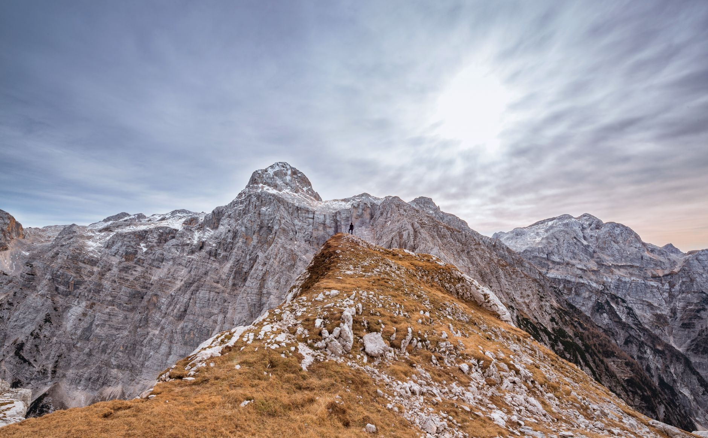
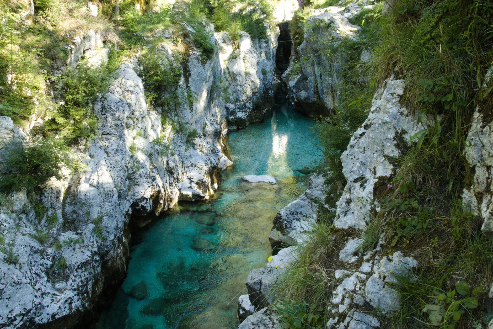
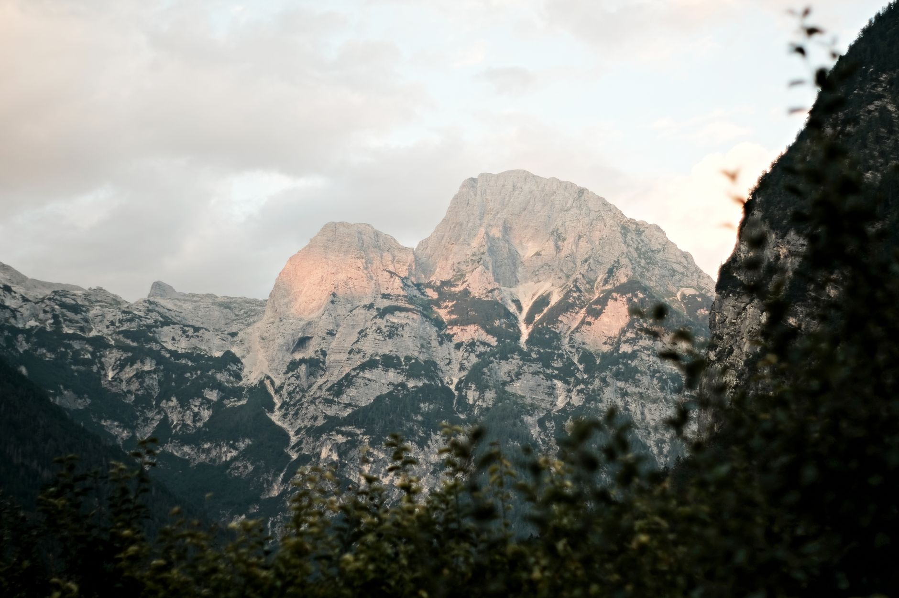

Photo: Alan Kabeš / Pexels
Vršič is Slovenia's highest mountain pass, and the road over it drops you straight into the Soča Valley on the other side. This route covers the full drive: Kranjska Gora, the pass itself, Trenta, Bovec and Kobarid, roughly 68 km that feels considerably longer with 50 numbered hairpins in the middle of it.
The road is fully paved and open to any rental car in summer, but it's a mountain pass in every sense: narrow in places, unlit, and not a route to rush.
-

Kranjska GoraThe climb starts here, with 24 numbered hairpins on this side of the pass alone. -

Vršič Pass1,611 metres, Slovenia's highest paved pass. Built in 1915 by 10,000 Russian prisoners of war for the Austro-Hungarian army; a memorial chapel near the summit still marks an avalanche that killed hundreds of them that same winter. -

Trenta26 more hairpins down the far side of the pass, dropping into the head of the Soča valley. -

BovecSits on the Soča river, known for staying a distinct emerald-turquoise color year round, a result of the limestone riverbed rather than anything seasonal. -

KobaridBetter known by its Italian name, Caporetto: the site of the 1917 battle that Ernest Hemingway wrote into A Farewell to Arms.
Stop photos: Vladimir Srajber, Oskar Gross, Krivec Ales, Philipp Schwarz, Jiri Ikonomidis / Pexels
The Russian Chapel near the summit is easy to miss at speed but takes only a few minutes to stop for, and it's the most direct link this drive has to the pass's actual history.
Good to know before you drive it
- Vršič Pass is closed roughly from November to late April or May, depending on snow. It's a seasonal mountain road, not a year-round route, so check conditions before planning a trip outside summer.
- The pass itself is a regional road, so no vignette (toll sticker) is needed to drive it. You will need one if you reach Kranjska Gora or Bovec via Slovenia's motorways, sold at border crossings and petrol stations.
- Slovenia's speed limits: 130 km/h on motorways, 90 km/h on main roads, 50 km/h in towns. None of that applies on the pass itself, where the hairpins keep speeds far lower regardless of the posted limit.
- 68 km sounds short, but between the hairpins and the stops, this is a half-day drive at a reasonable pace, not a quick pass-through.
Ready to book this drive? This route runs 68 km and about 1.4 hours behind the wheel, entirely inside Auto Europe's coverage area.
We book through Auto Europe. It compares Hertz, Sixt and the other major agencies in one search, with cross-border and one-way terms visible before checkout instead of buried in each company's own fine print.
Compare car rental prices →This is an affiliate link. Booking through it may earn Travel Gap a commission at no extra cost to you.
Read the full Europe road trip planning guide for what to check before you book anywhere on the continent.